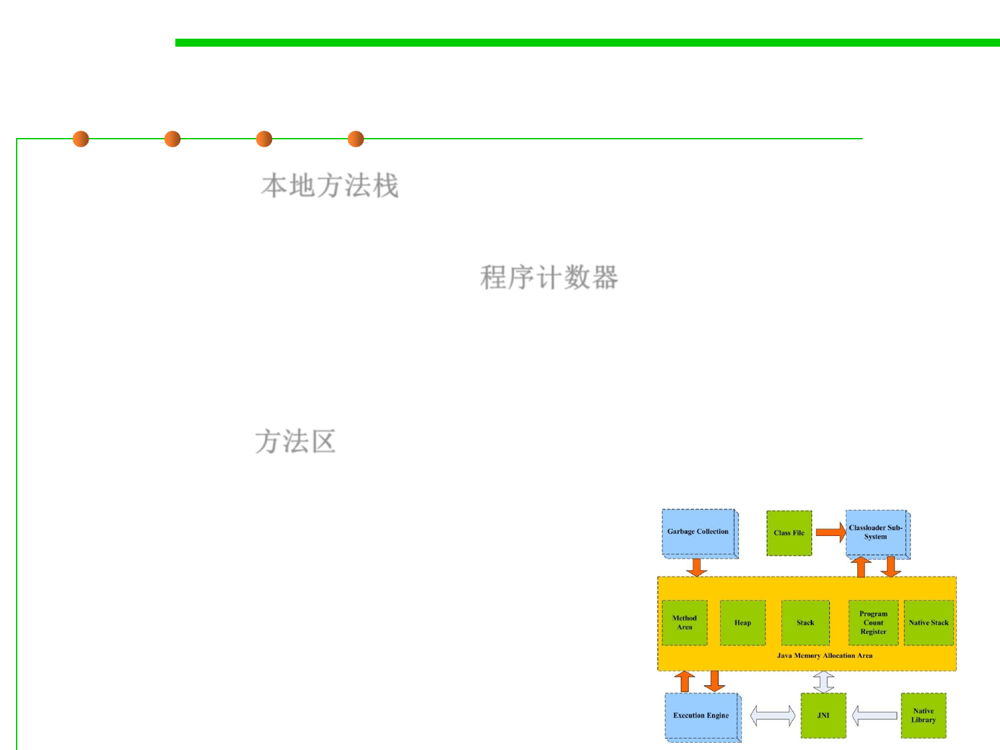

8.1 Metrics, Principles, and Methods of Construction for Performance
Memory Structure of Java Virtual Machine (JVM)
▪ Native Stacks 本地方法栈
– Manage native methods( coded in C) used by JVM
▪ Program Counter Register (PC) 程序计数器
– If the current thread is executing a java method, PC records the Java
bytecode address of the executed method.
– If the current thread is executing a native method, PC is empty.
▪ Method Area 方法区
– The method area is also called the permanent area. It mainly contains the
definition information of constants and classes.